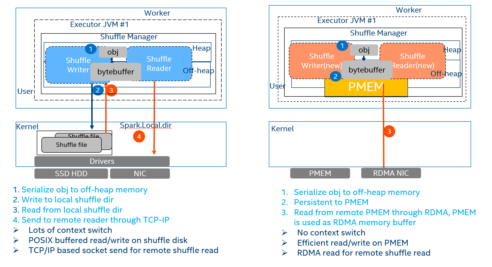

PMem Shuffle for Apache Spark Guide
1. PMem Shuffle introduction
2. Recommended HW environment
3. Install and configure PMem
4. Configure and Validate RDMA
5. Install dependencies for PMem Shuffle
6. Install PMem Shuffle for Spark
7. PMem Shuffle for Spark Testing
8. Trouble Shooting
Reference
PMem Shuffle for Spark (previously Spark-PMoF) depends on multiple native libraries like libfabrics, libcuckoo, PMDK. This enabling guide covers the installing process for the time being, but it might change as the install commands and related dependency packages for the 3rd party libraries might vary depending on the OS version and distribution you are using. Yarn, HDFS, Spark installation and configuration is out of the scope of this document.
1. PMem Shuffle introduction
Intel Optane DC persistent memory is the next-generation storage at memory speed. It closes the performance gap between DRAM memory technology and traditional NAND SSDs. Remote Persistent Memory extends PMem usage to new scenario, lots of new usage cases & value proposition can be developed.
Spark shuffle is a high cost operation as it issues a great number of small random disk IO, serialization, network data transmission, and thus contributes a lot to job latency and could be the bottleneck for workloads performance.
PMem Shuffle for spark (previously Spark PMoF) https://github.com/Intel-bigdata/Spark-PMoF) is a Persistent Memory over Fabrics (PMoF) plugin for Spark shuffle, which leverages the RDMA network and remote persistent memory (for read) to provide extremely high performance and low latency shuffle solutions for Spark to address performance issues for shuffle intensive workloads.
PMem Shuffle brings follow benefits:
- Leverage high performance persistent memory as shuffle media as well as spill media, increased shuffle performance and reduced memory footprint
- Using PMDK libs to avoid inefficient context switches and memory copies with zero-copy remote access to persistent memory.
- Leveraging RDMA for network offloading
The Figure 1 shows the high level architecture of PMem Shuffle, it shows how data flows between Spark and shuffle devices in PMem Shuffle for spark shuffle and Vanilla Spark. In this guide, we will introduce how to deploy and use PMem Shuffle for Spark.

Figure 1: PMem Shuffle for Spark
2. Recommended HW environment
2.1. System Configuration
2.1.1 HW and SW Configuration
A 4x or 3x Node cluster is recommended for a proof of concept tests, depending your system configurations, if using 3 nodes cluster, the Name node and Spark Master node can be co-located with one of the Hadoop data nodes.
Hardware: - Intel® Xeon™ processor Gold 6240 CPU @ 2.60GHz, 384GB Memory (12x 32GB 2666 MT/s) or 192GB Memory (12x 16GB 2666MT/s) - An RDMA capable NIC, 40Gb+ is preferred. e.g., 1x Intel X722 NIC or Mellanox ConnectX-4 40Gb NIC - RDMA cables: - Mellanox MCP1600-C003 100GbE 3m 28AWG - Shuffle Devices： - 1x 1TB HDD for shuffle (baseline) - 4x 128GB Persistent Memory for shuffle - 4x 1T NVMe for HDFS Switch: - Arista 7060 CX2 (7060CX2-32S-F) 100Gb switches was used
- Please refer to section 4.2 for configurations Software:
- Hadoop 2.7
- Spark 3.1.1
- Fedora 29 with ww08.2019 BKC
2.2. Recommended RDMA NIC
PMem Shuffle is using HPNL (https://cloud.google.com/solutions/big-data/) for network communication, which leverages libfabric for efficient network communication, so a RDMA capable NIC is recommended. Libfabric supports RoCE, iWrap, IB protocol, so various RNICs with different protocol can be used.
2.3 Recommended PMEM configuration
It is recommended to install 4+ PMem DIMMs on the SUT, but you can adjust the numbers accordingly. In this enabling guide, 4x 128GB PMEMM was installed on the SUT as an exmaple.
2.4 Recommended PMEM BKC (optional)
This development guide was based on ww08.2019 BKC (best known configuration). Please contact your HW vendor for latest BKC.
Please refer to backup if you do not have BKC access. BKC installation/enabling or FW installation is out of the scope of this guide.
3. Install and configure PMEM (example)
1) Please install ipmctl and ndctl according to your OS version
2) Run ipmctl show -dimm to check whether dimms can be recognized
3) Run ipmctl create -goal PersistentMemoryType=AppDirect to create AD
mode
4) Run ndctl list -R, you will see region0 and region1.
5) Assume you have 4x PMEM installed on 1 node.
a. Run ndctl create-namespace -m devdax -r region0 -s 120g
b. Run ndctl create-namespace -m devdax -r region0 -s 120g
c. Run ndctl create-namespace -m devdax -r region1 -s 120g
d. Run ndctl create-namespace -m devdax -r region1 -s 120g
This will create four namespaces, namely /dev/dax0.0, /dev/dax0.1, /dev/dax1.0,
/dev/dax1.1 in that node, and it will be used as PMem Shuffle media.
You can change your configuration (namespaces numbers, size) accordingly.
6) Step 5 is required only when running this solution over RDMA is considered. Otherwise PMem can be initialized in fsdax mode.
a. Run ndctl create-namespace -m fsdax -r region0 -s 120g
b. Run ndctl create-namespace -m fsdax -r region0 -s 120g
c. Run ndctl create-namespace -m fsdax -r region1 -s 120g
d. Run ndctl create-namespace -m fsdax -r region1 -s 120g
Four namespaces /dev/pmem0, /dev/pmem0.1, /dev/pmem1, /dev/pmem1.1 are created. Note that the namespace name might vary due to existing namespaces. In general, the name is consistent with the pattern /dev/pmem*.
After creating the namespace in fsdax mode, the namespace is ready for a file system. Here we use Ext4 file system in enabling.
e. mkfs.ext4 /dev/pmem0
f. mkfs.ext4 /dev/pmem0.1
g. mkfs.ext4 /dev/pmem1
h. mkfs.ext4 /dev/pmem1.1
Create directories and mount file system to them. To get the DAX functionality, mount the file system with dax option.
i. mkdir /mnt/pmem0 && mount -o dax /dev/pmem0 /mnt/pmem0
j. mkdir /mnt/pmem0.1 && mount -o dax /dev/pmem0.1 /mnt/pmem0.1
k. mkdir /mnt/pmem1 && mount -o dax /dev/pmem1 /mnt/pmem1
l. mkdir /mnt/pmem1.1 && mount -o dax /dev/pmem1.1 /mnt/pmem1.1
Change configurations accordingly.
4. Configure and Validate RDMA
Notes This part is vendor specific, it might NOT apply to your environment, please check your switch, NIC manuals accordingly.
4.1 Configure and test iWARP RDMA
4.1.1 Download rdma-core and install dependencies
The rdma-core provides the necessary userspace libraries to test rdma connectivity with tests such as rping. Refer to latest rdma-core documentation for updated installation guidelines (https://github.com/linux-rdma/rdma-core.git).
You might refer to HW specific instructions or guide to enable your RDMA NICs. Take Mellanox as an example, perform below steps to enable it:
git clone <https://github.com/linux-rdma/rdma-core.git>
dnf install cmake gcc libnl3-devel libudev-devel pkgconfig
valgrind-devel ninja-build python3-devel python3-Cython
python3-docutils pandoc
//change to yum on centos
bash build.sh
#on centos 7
yum install cmake gcc libnl3-devel libudev-devel make pkgconfig
valgrind-devel
yum install epel-release
yum install cmake3 ninja-build pandoc
4.1.2 Switch Configuration (optional)
This part is HW specific, please check your switch manual accordingly. Connect the console port to PC. Username is admin. No password. Enter global configuration mode.
Below example is based on Arista 7060 CX2 100Gb Switch, it is to configure the 100Gb port to work at 40Gb to match the NIC speed. It is NOT required if your NIC and calbes are match.
Config Switch Speed to 40Gb/s
switch# enable
switch# config
switch(config)# show interface status
Configure corresponding port to 40 Gb/s to match the NIC speed
switch(config)# interface Et(num_of_port)/1
switch(config)# speed forced 40gfull
RoCE might have performance issues, so PFC configuration is strongly suggested. You will need to check the RDMA NIC driver manual and switch manual to configure PFC. Below is the example for ConnectX-4 and Arista 7060-CX2 switches.
Below is to set the two connection ports in the same vlan and configure it in trunk mode.
Configure interface as trunk mode and add to vlan
switch(config)# vlan 1
switch(config-vlan-1)#
switch(config)# interface ethernet 12-16
switch(config-if-Et12-16)# switchport trunk allowed vlan 1
switch (config-if-et1) # **priority-flow-control on**
switch (config-if-et1) # **priority-flow-control priority 3 no-drop**
4.1.3 Download and install drivers
A. Example: Mellanox Enabling RoCE V2 RDMA (Optional)
There are lots of packages need to be installed for dependency, please refer to your RDMA NIC's manualls to install it correctly.
yum install atk gcc-gfortran tcsh gtk2 tcl tk
please install NIC drivers accordingly.
# Download MLNX_OFED_LINUX-4.7-3.2.9.0-* from https://community.mellanox.com/s/article/howto-install-mlnx-ofed-driver
# e.g., wget http://www.mellanox.com/downloads/ofed/MLNX_OFED-<version>/MLNX_OFED_LINUX-<version>-<distribution>-<arch>.tgz .
tar zxf MLNX_OFED_LINUX-4.7-3.2.9.0-*
cd MLNX_OFED_LINUX-4.7-3.2.9.0-
./mlnxofedinstall --add-kernel-support.
# The process might interpret and promote you to install dependencies. Install dependencies and try again
# This process will take some time.
tar zxf MLNX_OFED_LINUX-4.7-3.2.9.0-*
cd MLNX_OFED_LINUX-4.7-3.2.9.0-
./mlnxofedinstall --add-kernel-support.
# The process might interpret and promote you to install
dependencies. Install dependencies and try again
# This process will take some time. **
Restart the driver:
/etc/init.d/openibd restart
Might need to unload the modules if it is in use. Make sure the that the field link_layer is “Ethernet”. Then you can use following command to get the device name.
B. Enable PFC (Priority Flow Control) to guarantee stable performance (optional)
Then you can use following command to get the device name
If you’re using Mellanox NIC, PFC is a must to guarantee stable performance.
Fetch RDMA info with rdma command:
rdma link
0/1: i40iw0/1: state DOWN physical_state NOP
1/1: i40iw1/1: state ACTIVE physical_state NOP
2/1: mlx5_0/1: state DOWN physical_state DISABLED netdev ens803f0
3/1: mlx5_1/1: state ACTIVE physical_state LINK_UP netdev ens803f1
lspci | grep Mellanox
86:00.0 Ethernet controller: Mellanox Technologies MT27700 Family [ConnectX-4]
86:00.1 Ethernet controller: Mellanox Technologies MT27700 Family [ConnectX-4]
Set PFC:
/etc/init.d/openibd restart
mlnx_qos -i ens803f1 --pfc 0,0,0,1,0,0,0,0
modprobe 8021q
vconfig add ens803f1 100
ifconfig ens803f1.100 $ip1/$mask up //change to your own IP
ifconfig ens803f1 $ip2/$mask up //Change to your own IP
for i in {0..7}; do vconfig set_egress_map ens803f1.100 $i 3 ; done
tc_wrap.py -i ens803f1 -u 3,3,3,3,3,3,3,3,3,3,3,3,3,3,3,3
Modify the IP address part based on your environment and execute the script.
4.1.4 Check RDMA module
Make sure the following modules are loaded:
modprobe ib_core i40iw iw_cm rdma_cm rdma_ucm ib_cm ib_uverbs
```
#### 4.1.5 Validate RDMA functionalities
Check that you see your RDMA interfaces listed on each server when you
run the following command: **ibv_devices**
Check with rping for RDMA connectivity between target interface and
client interface.
1) Assign IPs to the RDMA interfaces on Target and Client.
2) On Target run:rping -sdVa <Target IP>
3) On Client run: rping -cdVa <Target IP>
Example:
On the server side:
```bash
rping -sda $ip1
created cm_id 0x17766d0
rdma_bind_addr successful
rdma_listen
accepting client connection request
cq_thread started.
recv completion
Received rkey 97a4f addr 17ce190 len 64 from peer
cma_event type RDMA_CM_EVENT_ESTABLISHED cma_id 0x7fe9ec000c90
(child)
ESTABLISHED
Received rkey 96b40 addr 17ce1e0 len 64 from peer
server received sink adv
rdma write from lkey 143c0 laddr 1771190 len 64
rdma write completion
rping -sda $ip2
created cm_id 0x17766d0
rdma_bind_addr successful
rdma_listen
…
accepting client connection request
cq_thread started.
recv completion
Received rkey 97a4f addr 17ce190 len 64 from peer
cma_event type RDMA_CM_EVENT_ESTABLISHED cma_id 0x7fe9ec000c90
(child)
ESTABLISHED
…
Received rkey 96b40 addr 17ce1e0 len 64 from peer
server received sink adv
rdma write from lkey 143c0 laddr 1771190 len 64
rdma write completion
…
```
On Client run: rping -cdVa <Target IP>
```bash
# Client side use .100 ip 172.168.0.209 for an example
rping -c -a 172.168.0.209 -v -C 4
ping data: rdma-ping-0: ABCDEFGHIJKLMNOPQRSTUVWXYZ[\]^_`abcdefghijklmnopqr
ping data: rdma-ping-1: BCDEFGHIJKLMNOPQRSTUVWXYZ[\]^_`abcdefghijklmnopqrs
ping data: rdma-ping-2: CDEFGHIJKLMNOPQRSTUVWXYZ[\]^_`abcdefghijklmnopqrst
ping data: rdma-ping-3: DEFGHIJKLMNOPQRSTUVWXYZ[\]^_`abcdefghijklmnopqrstu
Please refer to your NIC manuual for detail instructions on how to validate RDMA works.
5. Install dependencies for PMem Shuffle
We have provided a Conda package which will automatically install dependencies needed for PMem Shuffle, refer to OAP-Installation-Guide for more information. If you have finished OAP-Installation-Guide, you can find compiled OAP jars in $HOME/miniconda2/envs/oapenv/oap_jars/, and skip this session and jump to 6.Install PMem Shuffle for Spark
5.1 Install HPNL (https://github.com/Intel-bigdata/HPNL)
HPNL is a fast, CPU-Efficient network library designed for modern network technology. HPNL depends on Libfabric, which is protocol independent, it supports TCP/IP, RoCE, IB, iWRAP etc. Please make sure the Libfabric is installed in your setup. Based on this issue, please make sure NOT to install Libfabric 1.9.0.
You might need to install automake/libtool first to resolve dependency issues.
git clone https://github.com/ofiwg/libfabric.git
cd libfabric
git checkout v1.6.0
./autogen.sh
./configure --disable-sockets --enable-verbs --disable-mlx
make -j && sudo make install
5.1.1 Build and install HPNL
Assume Project_root_path is HPNL folder’s path, HPNL here.
sudo apt-get install cmake libboost-dev libboost-system-dev
#Fedora
dnf install cmake boost-devel boost-system
git clone https://github.com/Intel-bigdata/HPNL.git
cd HPNL
git checkout origin/spark-pmof-test --track
git submodule update --init --recursive
mkdir build; cd build
cmake -DWITH_VERBS=ON ..
make -j && make install
cd ${project_root_path}/java/hpnl
mvn install
5.2 install basic C library dependencies
yum install -y autoconf asciidoctor kmod-devel.x86\_64 libudev-devel libuuid-devel json-c-devel jemalloc-devel
yum groupinstall -y "Development Tools"
5.3 install ndctl
This can be installed with your package managmenet tool as well.
git clone https://github.com/pmem/ndctl.git
cd ndctl
git checkout v63
./autogen.sh
./configure CFLAGS='-g -O2' --prefix=/usr --sysconfdir=/etc
--libdir=/usr/lib64
make -j
make check
make install
5.4 install PMDK
yum install -y pandoc
git clone https://github.com/pmem/pmdk.git
cd pmdk
git checkout tags/1.8
make -j && make install
export PKG_CONFIG_PATH=/usr/local/lib64/pkgconfig/:$PKG_CONFIG_PATH
echo “export PKG_CONFIG_PATH=/usr/local/lib64/pkgconfig/:$PKG_CONFIG_PATH” > /etc/profile.d/pmdk.sh
5.5 Install RPMem extension
git clone https://github.com/efficient/libcuckoo
cd libcuckoo
mkdir build
cd build
cmake -DCMAKE_INSTALL_PREFIX=/usr/local -DBUILD_EXAMPLES=1 -DBUILD_TESTS=1 ..
make all && make install
git clone -b <tag-version> https://github.com/intel-bigdata/OAP.git
cd OAP/oap-shuffle/RPMem-shuffle
mvn install -DskipTests
6. Install PMem Shuffle for Spark
6.1 Configure RPMem extension for spark shuffle in Spark
PMem Shuffle for spark shuffle is designed as a plugin to Spark. Currently the plugin supports Spark 3.1.1 and works well on various Network fabrics, including Socket, RDMA and Omni-Path. There are several configurations files needs to be modified in order to run PMem Shuffle.
Prerequisite
Use below command to remove original initialization of one PMem, this is a MUST step, or RPMemShuffle won’t be able to open PMem devices.
pmempool rm ${device_name}
#example: pmempool rm /dev/dax0.0
If you install OAP Conda package, you can use below command to remove original initialization of one PMem. ```shell script export LD_LIBRARY_PATH=$HOME/miniconda2/envs/oapenv/lib/:$LD_LIBRARY_PATH $HOME/miniconda2/envs/oapenv/bin/pmempool rm ${device_name}
**Refer to the Reference section for detail descrption of each parameter.**
#### Enable RPMemShuffle
```bash
spark.shuffle.manager org.apache.spark.shuffle.pmof.PmofShuffleManager
spark.driver.extraClassPath /$path/oap-shuffle/RPMem-shuffle/core/target/oap-rpmem-shuffle-java-<version>-with-spark<spark.version>.jar
spark.executor.extraClassPath /$path/oap-shuffle/RPMem-shuffle/core/target/oap-rpmem-shuffle-java-<version>-with-spark<spark.version>.jar
Switch On/Off PMem and RDMA
spark.shuffle.pmof.enable_rdma true
spark.shuffle.pmof.enable_pmem true
Add PMem information to spark config
Explanation: spark.shuffle.pmof.pmem_capacity: the capacity of one PMem device, this value will be used when register PMem device to RDMA.
spark.shuffle.pmof.pmem_list: a list of all local PMem device, make sure your per physical node executor number won’t exceed PMem device number, or one PMem device maybe opened by two spark executor processes and this will leads to a PMem open failure.
spark.shuffle.pmof.dev_core_set: a mapping of which core range will be task set to which PMem device, this is a performance optimal configuration for better PMem numa accessing.
spark.io.compression.codec: use “snappy” to do shuffle data and spilling data compression, this is a MUST when enabled PMem due to a default LZ4 ByteBuffer incompatible issue.
spark.shuffle.pmof.pmem_capacity ${total_size_of_one_device}
spark.shuffle.pmof.pmem_list ${device_name},${device_name},…
spark.shuffle.pmof.dev_core_set ${device_name}:${core_range};…
#example:
/dev/dax0.0:0-17,36-53;/dev/dax0.2:0-17,36-53
spark.io.compression.codec snappy
Memory configuration suggestion
Suitable for any release before OAP 0.8. In OAP 0.8 and later release, the memory footprint of each core is reduced dramatically and the formula below is not applicable any more.
Spark.executor.memory must be greater than shuffle_block_size * numPartitions * numCores * 2 (for both shuffle and external sort), for example, default HiBench Terasort numPartition is 200, and we configured 10 cores each executor, then this executor must has memory capacity greater than 2MB(spark.shuffle.pmof.shuffle_block_size) * 200 * 10 * 2 = 8G.
Recommendation configuration as below, but it needs to be adjusted accordingly based on your system configurations.
Yarn.executor.num 4 // same as PMem namespaces number
Yarn.executor.cores 18 // total core number divide executor number
spark.executor.memory 15g // 2MB * numPartition(200) * 18 * 2
spark.yarn.executor.memoryOverhead 5g // 30% of spark.executor.memory
spark.shuffle.pmof.shuffle_block_size 2096128 // 2MB – 1024 Bytes
spark.shuffle.pmof.spill_throttle 2096128 // 2MB – 1024 Bytes, spill_throttle is used to
// set throttle by when spill buffer data to
// Persistent Memory, must set spill_throttle
// equal to shuffle_block_size
spark.driver.memory 10g
spark.yarn.driver.memoryOverhead 5g
Configuration of RDMA enabled case
spark.shuffle.pmof.node : spark nodes and RDMA ip mapping list
spark.driver.rhost / spark.driver.rport : Specify spark driver RDMA IP and port
spark.shuffle.pmof.server_buffer_nums 64
spark.shuffle.pmof.client_buffer_nums 64
spark.shuffle.pmof.map_serializer_buffer_size 262144
spark.shuffle.pmof.reduce_serializer_buffer_size 262144
spark.shuffle.pmof.chunk_size 262144
spark.shuffle.pmof.server_pool_size 3
spark.shuffle.pmof.client_pool_size 3
spark.shuffle.pmof.node $HOST1-$IP1,$HOST2-$IP2//Host-IP pairs, $hostname-$ip
spark.driver.rhost $IP //change to your host IP
spark.driver.rport 61000
FSDAX
Use spark.shuffle.pmof.pmpool_size to specify the size of created shuffle file. The size should obey the rule: max(spark.shuffle.pmof.pmpool_size) < size_of_namespace * 0.9. It's because we need to reserve some space in fsdax namespace for meta data.
Misc
The config spark.sql.shuffle.partitions is required to set explicitly, it's suggested to use default value 200 unless you're pretty sure what's the meaning of this value.
7. PMem Shuffle for Spark Testing
Pmem shuffle extension have been tested and validated with Terasort and Decision support workloads.
7.1 Decision support workloads
The Decision support workloads is a decision support benchmark that models several general applicable aspects of a decision support system, including queries and data maintenance.
7.1.1 Download spark-sql-perf
The link is https://github.com/databricks/spark-sql-perf and follow README to use sbt build the artifact.
7.1.2 Download the kit
As per instruction from spark-sql-perf README, tpcds-kit is required and please download it from https://github.com/databricks/tpcds-kit, follow README to setup the benchmark.
7.1.3 Prepare data
As an example, generate parquet format data to HDFS with 1TB data scale. The data stored path, data format and data scale are configurable. Please check script below as a sample.
import com.databricks.spark.sql.perf.tpcds.TPCDSTables
import org.apache.spark.sql._
// Set:
val rootDir: String = "hdfs://${ip}:9000/tpcds_1T" // root directory of location to create data in.
val databaseName: String = "tpcds_1T" // name of database to create.
val scaleFactor: String = "1024" // scaleFactor defines the size of the dataset to generate (in GB).
val format: String = "parquet" // valid spark format like parquet "parquet".
val sqlContext = new SQLContext(sc)
// Run:
val tables = new TPCDSTables(sqlContext, dsdgenDir = "/mnt/spark-pmof/tool/tpcds-kit/tools", // location of dsdgen
scaleFactor = scaleFactor,
useDoubleForDecimal = false, // true to replace DecimalType with DoubleType
useStringForDate = false) // true to replace DateType with StringType
tables.genData(
location = rootDir,
format = format,
overwrite = true, // overwrite the data that is already there
partitionTables = true, // create the partitioned fact tables
clusterByPartitionColumns = true, // shuffle to get partitions coalesced into single files.
filterOutNullPartitionValues = false, // true to filter out the partition with NULL key value
tableFilter = "", // "" means generate all tables
numPartitions = 400) // how many dsdgen partitions to run - number of input tasks.
// Create the specified database
sql(s"create database $databaseName")
// Create metastore tables in a specified database for your data.
// Once tables are created, the current database will be switched to the specified database.
tables.createExternalTables(rootDir, "parquet", databaseName, overwrite = true, discoverPartitions = true)
7.1.4 Run the benchmark
Launch DECISION SUPPORT WORKLOADS queries on generated data, check benchmark.scala below as a sample, it runs query64.
import com.databricks.spark.sql.perf.tpcds.TPCDS
import org.apache.spark.sql._
val sqlContext = new SQLContext(sc)
val tpcds = new TPCDS (sqlContext = sqlContext)
// Set:
val databaseName = "tpcds_1T" // name of database with TPCDS data.
val resultLocation = "tpcds_1T_result" // place to write results
val iterations = 1 // how many iterations of queries to run.
val query_filter = Seq("q64-v2.4")
val randomizeQueries = false
def queries = {
val filtered_queries = query_filter match {
case Seq() => tpcds.tpcds2_4Queries
case _=> tpcds.tpcds2_4Queries.filter(q =>
query_filter.contains(q.name))
}
filtered_queries
}
val timeout = 24*60*60 // timeout, in seconds.
// Run:
sql(s"use $databaseName")
val experiment = tpcds.runExperiment(
queries,
iterations = iterations,
resultLocation = resultLocation,
forkThread = true)
experiment.waitForFinish(timeout)
7.1.5 Check the result
Check the result under tpcds_1T_result folder. It can be an option to check the result at spark history server. (Need to start history server by \$SPARK_HOME/sbin/start-history-server.sh)
7.2 TeraSort
TeraSort is a benchmark that measures the amount of time to sort one terabyte of randomly distributed data on a given computer system.
7.2.1 Download HiBench
This guide uses HiBench for Terasort tests, https://github.com/Intel-bigdata/HiBench. HiBench is a big data benchmark suite and contains a set of Hadoop, Spark and streaming workloads including TeraSort.
7.2.2 Build HiBench as per instructions from build-bench.
7.2.3 Configuration
Modify \$HiBench-HOME/conf/spark.conf to specify the spark home and other spark configurations. It will overwrite the configuration of \$SPARK-HOME/conf/spark-defaults.conf at run time.
7.2.4 Launch the benchmark
Need to prepare the data with
\$HiBench-HOME/bin/workloads/micro/terasort/prepare/prepare.sh
Kick off the evaluation by \$HiBench-HOME/bin/workloads/micro/terasort/spark/run.sh
Change directory to \$HiBench-HOME/bin/workloads/micro/terasort/spark and launch the run.sh. You can add some PMEM cleaning work to make sure it starts from empty shuffle device every test iteration. Take run.sh below as a sample.
# ***Change below command accordingly ***
ssh ${node} pmempool rm /dev/dax0.0
current_dir=`dirname "$0"`
current_dir=`cd "$current_dir"; pwd`
root_dir=${current_dir}/../../../../..
workload_config=${root_dir}/conf/workloads/micro/terasort.conf
. "${root_dir}/bin/functions/load_bench_config.sh"
enter_bench ScalaSparkTerasort ${workload_config} ${current_dir}
show_bannar start
rmr_hdfs $OUTPUT_HDFS || true
SIZE=`dir_size $INPUT_HDFS`
START_TIME=`timestamp`
run_spark_job com.intel.hibench.sparkbench.micro.ScalaTeraSort $INPUT_HDFS $OUTPUT_HDFS
END_TIME=`timestamp`
gen_report ${START_TIME} ${END_TIME} ${SIZE}
show_bannar finish
leave_bench
7.2.5 Check the result
Check the result at spark history server to see the execution time and other spark metrics like spark shuffle spill status. (Need to start history server by \$SPARK_HOME/sbin/start-history-server.sh)
Reference
RPMemShuffle Spark configuration
Before running Spark workload, add following contents in spark-defaults.conf.
spark.executor.instances 4 // same as total PMem namespace numbers of your cluster
spark.executor.cores 18 // total core number divide executor number
spark.executor.memory 70g // 4~5G * spark.executor.cores
spark.executor.memoryOverhead 15g // 30% of spark.executor.memory
spark.shuffle.pmof.shuffle_block_size 2096128 // 2MB – 1024 Bytes
spark.shuffle.pmof.spill_throttle 2096128 // 2MB – 1024 Bytes
spark.driver.memory 10g
spark.yarn.driver.memoryOverhead 5g
spark.shuffle.compress true
spark.io.compression.codec snappy
spark.driver.extraClassPath $HOME/miniconda2/envs/oapenv/oap_jars/oap-rpmem-shuffle-java-<version>-with-spark<spark.version>.jar
spark.executor.extraClassPath $HOME/miniconda2/envs/oapenv/oap_jars/oap-rpmem-shuffle-java-<version>-with-spark<spark.version>.jar
spark.shuffle.manager org.apache.spark.shuffle.pmof.PmofShuffleManager
spark.shuffle.pmof.enable_rdma true
spark.shuffle.pmof.enable_pmem true
spark.shuffle.pmof.pmem_capacity 126833655808 // size should be same as pmem size
spark.shuffle.pmof.pmem_list /dev/dax0.0,/dev/dax0.1,/dev/dax1.0,/dev/dax1.1
spark.shuffle.pmof.dev_core_set dax0.0:0-71,dax0.1:0-71,dax1.0:0-71,dax1.1:0-71
spark.shuffle.pmof.server_buffer_nums 64
spark.shuffle.pmof.client_buffer_nums 64
spark.shuffle.pmof.map_serializer_buffer_size 262144
spark.shuffle.pmof.reduce_serializer_buffer_size 262144
spark.shuffle.pmof.chunk_size 262144
spark.shuffle.pmof.server_pool_size 3
spark.shuffle.pmof.client_pool_size 3
spark.shuffle.pmof.node $host1-$IP1,$host2-$IP2//HOST-IP Pair, seperate with ","
spark.driver.rhost $IP //change to your host
spark.driver.rport 61000
8. Trouble shooting
For any reason that a previous job is failed, please empty PMem spaces before another run.
It's because normal space release operation might fail to be invoked for failed jobs.
For devdax, use pmempool rm {devdax-namespace} to reset the entire namespace.
For fsdax, use rm -rf {mounted-pmem-folder}/shuffle_block* to remove corresponding shuffle pool files.
Reference guides (without BKC access)
If you do not have BKC access, please following below official guide: (1): General PMEMM support: PMEMM support https://www.intel.com/content/www/us/en/support/products/190349/memory-and-storage/data-center-persistent-memory/intel-optane-dc-persistent-memory.html
(2) PMEMM population rule: Module DIMM Population for Intel® Optane™ DC Persistent Memory https://www.intel.com/content/www/us/en/support/articles/000032932/memory-and-storage/data-center-persistent-memory.html?productId=190349&localeCode=us_en
(3) OS support requirement: Operating System OS for Intel® Optane™ DC Persistent Memory https://www.intel.com/content/www/us/en/support/articles/000032860/memory-and-storage/data-center-persistent-memory.html?productId=190349&localeCode=us_en
(4): Quick Start Guide: Provision Intel® Optane™ DC Persistent Memory https://software.intel.com/en-us/articles/quick-start-guide-configure-intel-optane-dc-persistent-memory-on-linux